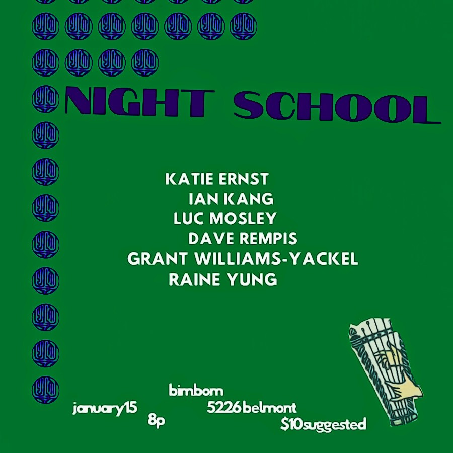

Night School
Chicago’s most dynamic audio/visual series, Night School, presents an evening of experimental video and music. Video artists will be paired with improvising musicians, with each musician live-scoring the video for the first time! There are no aesthetic hierarchies at Night School, each show is about spontaneity and openness, you never know what you’ll see and you won’t believe what you hear. Curated and hosted by Erez Dessel.
Featuring:
Luc Mosley
Katie Ernst
Dave Rempis
Raine Yung
Grant Williams-Yackel
Ian kang $10 suggested at the door, cash/venmo/zelle all accepted